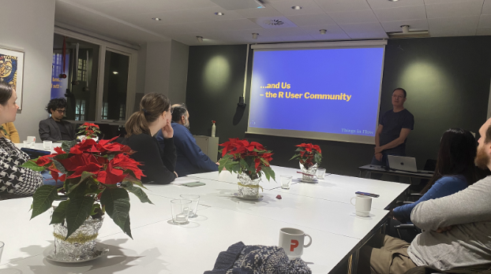
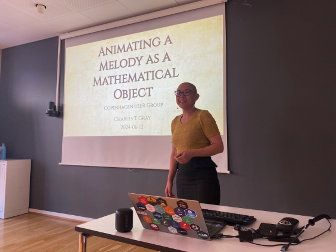

Cakes, Code, and Community: Rasmus Bååth’s Secret to Reviving the CopenhagenR UseR Group
Rasmus Bååth, the organizer of the CopenhagenR UseR Group, recently spoke to the R Consortium about his experience in organizing the group. After joining the Copenhagen R User Group in 2013, he took the lead in reviving the group in 2023 after a period of inactivity. Under his guidance, the group now focuses on industry-related topics, personal projects, and emerging tools like Quarto. Rasmus is dedicated to fostering a vibrant local R community through in-person meetups that encourage learning and collaboration.
The CopenhagenR UseR Group is hosting an exciting “Two Tools for Report Generation in R” event on October 3, 2024. The event will feature two presentations on using Sweave and Quarto for report generation, followed by discussions and networking at PROSA, København, Denmark.
Please share your background and involvement with the RUGS group.
I currently work as a Data Science Manager at Normative.io. I’ve used R on and off for about 15 or 16 years. It all started when I was doing my bachelor’s in academia and needed to plot a histogram. At that time, plotting a histogram in Excel wasn’t easy, so my supervisor suggested trying out R. I gave it a shot and got hooked. After that, I pursued a PhD in cognitive science, where I used R extensively for statistical analysis.
I used R for a lot of graphing during my academic years. After academia, I became a data scientist in the industry, and R was my preferred tool. I work with R and Python, depending on the job’s requirements. In 2013, there were no R meetups in the south of Sweden where I live. I found out about an R meetup in Copenhagen and decided to attend. There, I met Kenneth Rose, the organizer, who was full of energy and charisma. It was a fun group, so I started attending regularly despite the commute from Sweden to Copenhagen. Kenneth was very active and enthusiastic in running the meetup group.
After a couple of years, the group’s activity declined. A new organizer revived the group, but COVID hit, ending the meetups. The group had been around for ten years by 2023, and I felt it was a shame to let it die. I decided to restart it, and now we have a small but active group. We enjoy discussing industry-related topics and personal projects.

Can you share what the local R community is like?
It is the Copenhagen meetup group located in Denmark. However, I can speak for Denmark and Sweden since I live in Sweden. R is widely used in academia and is considered the language of choice for statistics. Python is more prevalent in the industry due to the large number of programmers who are familiar with the language. In Denmark, the pharmaceutical industry is significant. R is still widely used there due to its close ties to academia and the specific requirements for reporting, statistics, and visualization, in which R excels.
Do you guys host online or in-person events?
During the COVID-19 pandemic, we tried some online events, but creating a sense of community online with so much content is challenging. I believe online events are great, and people should consider them. However, we also recognize the need for in-person events. For those unable to attend, there is plenty of valuable content online. We don’t have the setup to record events, but we would consider doing so if feasible.

You have a Meetup titled “Two tools for report generation in R.” Can you share more on the topic covered? Why this topic?
Our next meetup will focus on automatic reporting in R. We’ll have two speakers: Dmytro Perepolkin and an anonymous speaker. The anonymous speaker will present on Sweave, an older tool used to generate reports in R, while Dmytro will present on Quarto, a more recent and popular tool for combining R code and text. This meetup will depart from the usual topics, focusing on automatic reporting rather than visualization.
I’m looking forward to our upcoming event. It will be a history lesson and a great opportunity to learn about a useful minimalistic tool (Sweave). I’m also excited about Quarto and the potential for new developments. We could have a Quarto meetup every year to stay updated with the latest advancements. The meetup will feature different presentations, including introductions to new tools and discussions about projects and code. It will be a great way to learn and connect with others in the field.
What are some of the popular R-related topics in the group?
The topics we typically cover are where R is at its strongest. We often discuss personal projects, and although I wonder if they receive a great response, I love them. Additionally, we frequently explore new tools and libraries, particularly those related to dashboarding, Shiny, and visualization. Presentations are highly technical, and I’ve noticed that our audience may not be accustomed to text-heavy or math-intensive presentations. Therefore, topics such as statistics and statistics packages might not receive as much attention despite my interest in them. Surprisingly, machine learning is not a common focus at our meetups, as most speakers are more inclined towards visualization, reporting, and statistics rather than machine learning.

Do you recommend any techniques for planning for or during the event? (GitHub, Zoom, other.) Can these techniques be used to make your group more inclusive to people who cannot attend physical events in the future?
There are three key components needed to get started with organizing an event. First, you need people who are interested in attending your event. It can be challenging if you’re in a small town or a location where it’s difficult to attract attendees. Second, you need to secure speakers who are willing to participate. Lastly, finding a suitable venue is crucial. Having a reliable and cost-free location for your event is essential. We were fortunate to secure a free venue through a union for IT workers in Copenhagen, which aligns with our goal of offering free courses without being tied to a specific company.
Finding speakers can be challenging, but constantly contacting and asking for volunteers is the best approach. To make it easier for potential speakers, consider organizing events where multiple speakers can do shorter presentations, which may be less intimidating than a full-hour presentation. However, attracting speakers and attendees remains the most difficult aspect of organizing events. Nevertheless, securing a dependable venue is a great starting point.
And then there are some small things. Make sure to make nice announcements. They need a nice picture. They need friendly text so that people feel welcome. That’s the minimal thing. And the other thing is, if it’s allowed in the meetup space, bring some cakes or cookies and have some snacks. If people know there will be a little bit of snacks, they’re more likely to show up. So it’s a small thing, but I think that helps. This meetup is in Copenhagen, and I’m from Sweden. However, Denmark and Copenhagen have a special relationship with beer. I distinctly remember my first Copenhagen meetup when Kenneth Rose was the organizer. Back then, he brought a big case of beer cans to each meetup, and everyone was having a nice time. I don’t say you need a beer at your meetup, but bringing drinks and snacks is always nice.
How do I Join?
R Consortium’s R User Group and Small Conference Support Program (RUGS) provides grants to help R groups organize, share information, and support each other worldwide. We have given grants over the past four years, encompassing over 68,000 members in 33 countries. We would like to include you! Cash grants and meetup.com accounts are awarded based on the intended use of the funds and the amount of money available to distribute.